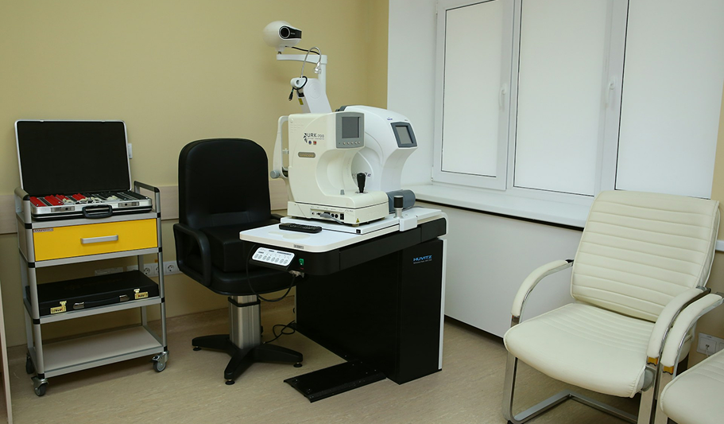

Appointment: +91 3126457918
About The Clinic

Welcome to Celestia Eye Clinic, where advanced clinical expertise meets deeply personalized care.
Led by Dr. Claire Jenkins, our team brings over a decade of specialized microsurgical experience to
protect and enhance your vision. We believe that exceptional eye care requires a dedicated approach.
By rejecting rushed appointments, we take the time to truly understand your needs and design customized
care plans tailored perfectly to your unique lifestyle.
Our facility pairs this dedicated patient focus with advanced technology. We utilize modern diagnostic
imaging and precise laser systems to ensure maximum treatment accuracy and successful, comfortable
outcomes. From routine eye health management to specialized procedures—including advanced cataract
surgery, laser vision correction (LASIK/SMILE), and retinal therapies—Celestia Eye Clinic is committed to
providing trusted, world-class care for your sight.
About The Doctor

Dr. Claire Jenkins, MD
Ophthalmologist & Refractive Surgeon
BSc, MD, FRCSC (Fellow of the Royal College of Surgeons)
Dr. Claire Jenkins is a board-certified ophthalmologist and refractive
surgeon specializing in advanced vision correction, custom LASIK, and premium cataract surgeries.
She holds a Bachelor of Science (BSc) and earned her Doctor of Medicine (MD) before completing her
rigorous residency training in ophthalmology. As a distinguished Fellow of the Royal College of Surgeons
(FRCSC), she maintains the highest standards of clinical excellence, safety, and surgical precision in her field.
With over a decade of dedicated clinical experience, Dr. Jenkins combines state-of-the-art diagnostic
technology with a meticulous microsurgical approach to deliver world-class eye care. Her patient-centric
philosophy focuses on clear communication, absolute safety, and long-term visual wellness. Rather than
offering one-size-fits-all treatments, she takes the time to understand each patient's daily routine, craft
customized care plans, and ensure outcomes that truly enhance their unique lifestyle.